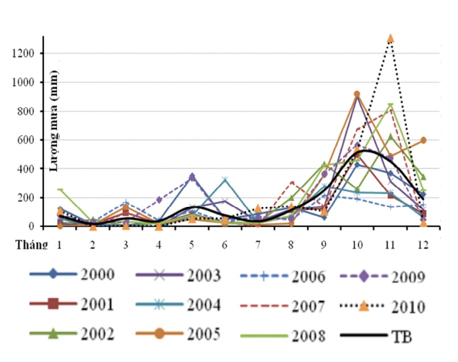
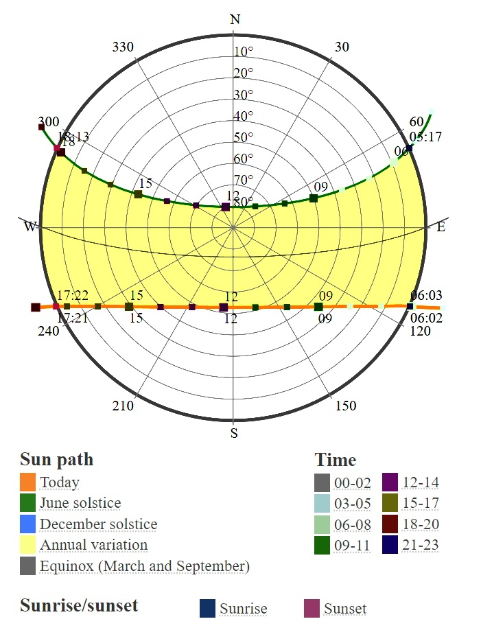
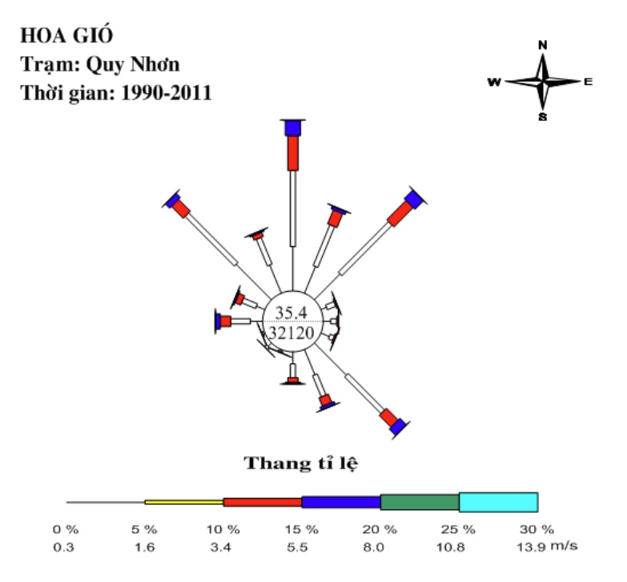
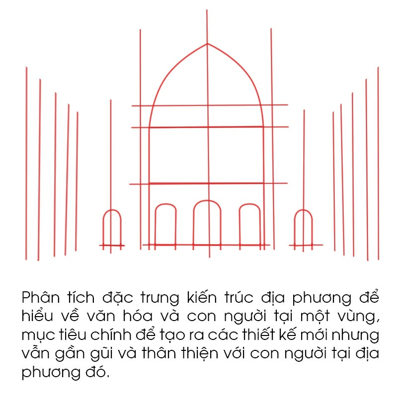
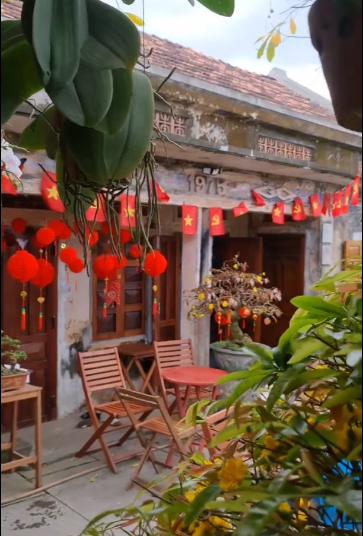

Lịch sử văn hóa và khí hậụ có mối liên hệ chặt chẽ với kiến trúc địa phương, việc hiểu về những yếu tố đó sẽ giúp các nhà kiến trúc dễ dàng đưa ra các giải pháp thiết kế phù hợp với môi trường khí hậu, thiết kế ra các hình thức kiến trúc phù hợp gần gũi với con người tại địa phương qua đó tối ưu được chi phí, thúc đẩy được văn hóa kinh tế và nhận diện kiến trúc theo vùng miền một các có căn cứ.
BÌNH ĐỊNH. LỊCH SỬ - VĂN HÓA - KHÍ HẬU ĐẾN KIẾN TRÚC
Bình Định từng là trung tâm của nhà nước Chăm Pa cổ kính trong gần 5 thế kỷ. Đến năm 1832, toàn bộ vương quốc chính thức bị sáp nhập vào Việt Nam dưới triều vua Minh Mạng. Vì thế, kiến trúc và văn hóa Bình Định có thể tóm tắt qua 4 giai đoạn sau:
- Thời kỳ Chăm Pa (192 đến năm 1832): Bình Định từng là cố đô của vương quốc Chăm Pa. Các tháp Chăm như Tháp Dương Long, Thủ Thiện, Tháp Bình Lâm, Tháp Bánh Ít, Tháp Cánh Tiên, Tháp Phú Lốc và Tháp Đôi ở thành phố Quy Nhơn là những di sản kiến trúc độc đáo từ thời kỳ này.
- Thời kỳ văn hóa Tây Sơn (thế kỷ 18): du nhập kiến trúc phía bắc Việt Nam đã thay đổi để phù hợp với khí hậu địa phương, thực ra kiến trúc và văn hóa Việt đã ảnh hưởng đến vùng đất này từ thế ký 14 và phát triển mạnh mẽ vào cuối thế kỷ 18 trong triều đại Tây Sơn.
- Thời kỳ Pháp thuộc (1858-1945): Kiến trúc thời Cận đại và Hiện đại của người Việt đã chịu ảnh hưởng từ phương Tây rõ rệt.
- Thời kỳ sau 1945: Đã có sự tiếp thu, dung hợp kiến trúc Đông-Tây với bản sắc riêng để định hình nên kiến trúc như ngày nay.

KHÍ HẬU CỦA QUY NHƠN - BÌNH ĐỊNH
1. MƯA & MÂY: Quy Nhơn là khu vực có lượng mưa vào loại trung bình trên cả nước. Một năm tại đây thường xảy ra 2 mùa mưa (mưa tiểu mãn và mưa chính). Mùa mưa tiểu mãn thường xảy ra vào tháng 5, tháng 6 với lượng mưa tháng dao động từ khoảng 40 -380mm. Tuy nhiên, không phải năm nào cũng có mưa tiểu mãn. Mùa mưa chính xảy ra từ cuối tháng 9 đến đầu tháng 12, lớn nhất vào cuối tháng 10 - đầu tháng 11 với lượng mưa tháng của tháng có mưa nhiều nhất năm dao động từ khoảng 180 - 1300mm. Số ngày trời ít mây (lượng mây trung bình ngày dưới 2/10 bầu trời) ở Bình Định tương đối ít, chỉ chiếm 6 - 15% số ngày trong năm. Số ngày ít mây ở vùng núi hay thung lũng thấp hơn so với vùng ven biển. Trung bình hàng năm ở vùng ven biển có khoảng từ 22 - 55 ngày ít mây Số ngày nhiều mây (lượng mây trung bình ngày trên 8/10) ở Bình Định chiếm 26 - 32% số ngày trong năm. Trung bình hàng năm ở vùng núi hay thung lũng có trên 160 ngày nhiều mây, trong khi đó ở vùng ven biển chỉ dưới 120 ngày. vùng núi hay thung lũng chỉ có trên dưới 10 ngày.

2. NẮNG & NHIỆT ĐỘ Mùa nóng kéo dài khoảng 4,3 tháng, từ 06/05 đến 15/09, với độ cao trung bình 32°C. Tháng nóng nhất trong năm ở Quy Nhơn là Tháng 6, với nhiệt độ cao trung bình là 34°C và nhiệt độ thấp trung bình là 28°C. Mùa mát kéo dài khoảng 2,8 tháng, từ 23 /11 đến 17/02, với nhiệt độ cao trung bình dưới 27°C. Tháng lạnh nhất trong năm ở Quy Nhơn là Tháng 1, với nhiệt độ thấp trung bình là 22°C và nhiệt độ cao trung bình là 26°C. Chênh lệch nhiệt độ giữa ban ngày và ban đêm không lớn, từ 5 đến 10 độ C tùy theo khu vực. Mức bức xạ mặt trời trung bình từ 4.3 – 5.5 kWh/m²/ngày trong mùa hè và từ 2.0 – 3.0 kWh/m²/ngày trong mùa đông. Tổng cường độ bức xạ mặt trời cao nhất vào các tháng 4, 5, 6, 7, 8, 9,10

3. GIÓ & BÃO Như vậy có thể nói, chế độ gió ở Bình Định thể hiện hai mùa rõ rệt. Mùa đông thịnh hành hướng Bắc. Mùa hạ là thời kỳ thịnh hành một trong ba hướng gió chính là Tây, Nam và Đông Nam. Nhưng tùy thuộc vào địa hình mỗi nơi, như Hoài Nhơn hướng gió thịnh hành là hướng Nam, Quy Nhơn thịnh hành hướng Đông Nam và Tây. ngoài sự thay đổi hướng gió qua các mùa theo chu kỳ năm, còn xuất hiện một loại gió luân phiên thay đổi theo chu kỳ ngày đêm, đó là gió đất, gió biển. Quy Nhơn từ tháng 4 đến tháng 9 cấp gió từ 0 - 1m/s thường chiếm tần suất lớn nhất. Từ tháng 10 đến tháng 3 tốc độ >2 - 5m/s đạt tần suất cao nhất trong năm chiếm tới 52 - 72%, Trong 70 năm qua Bình Định có 18 cơn bão, thường xảy ra vào tháng 8 đến tháng 10, ít hơn các tỉnh miền trung trong đó cao nhất là Đà Nẵng 41 cơn. Cơn bão mạnh nhất trong 20 năm qua ảnh hưởng trược tiếp tới Bình ĐỊnh có gió cấp 14 giật cấp 17 (120 đến 170km/h)

ĐẶC TRƯNG. KIẾN TRÚC
- Tính đối xứng: thể hiện qua rất nhiều công trình đặc trưng đang tồn tại đến các công trình có tuổi đời hàng trăm năm.
- Cửa vòm: từ các tháp cổ Chăm Pa đến nhà thờ thời pháp đều sử dụng cửa vòm và khá nhỏ để tạo sự thân thiện.
- Cao và nhiều tuyến đứng: sử dụng các đường Implied Line (vô hình) và Dividing Line để phân chia không gian theo chiều thẳng đứng, giúp công trình có cảm giác cao và vươn tới trời xanh.
- Tính lặp lại: sử dụng cột, lặp đi lặp lại, hoặc các lớp mái được nhắc lại ở nhiều tầng bậc khác nhau.
- Hòa hợp với môi trường và khí hậu: Bình Định là một tỉnh ven biển nằm ở phía bắc khu vực duyên hải Nam Trung Bộ, miền Trung của Việt Nam. Nhìn chung kiến trúc Bình ĐỊnh vừa vặn với con người nơi đây và sử dụng các vật liệu tự nhiên sẵn có của địa phương: gạch, ngói, gỗ, đá...nên hài hòa với khung cảnh tự nhiên.


VẬT LIỆU ĐỊA PHƯƠNG
Bình định là một tỉnh ven biển có núi non và sông nước nên vật liệu được sử dụng trong xây dựng rất đa dạng. Việc sử dụng vật liệu địa phương vào thiết kế vừa để tạo sự gần gũi thân thuộc, sự gắn kết và hòa hợp với thiên nhiên thì một yếu tố quan trọng không kém là tối ưu chi phí xây dựng đem lại sự thúc đẩy kinh tế địa phương. Đá đen Bình ĐỊnh được sử dụng nhiều trong xây dựng tại Việt Nam, ngoài ra Bình ĐỊnh cũng nổi tiếng với kỹ thuật xây gạch và các loại đá đặc trưng khác.

Qua các phân tích như trên có thể lý giải được vì sao các ngôi nhà tại Quy nhơn khá nhỏ cả về diện tích và quy mô nó liên quan nhiều đến tính thân thiện của người dân tại Bình ĐỊnh và khí hậu tại nơi đây và đa số các ngôi nhà còn tồn tại được xây dựng trong giai đoạn 1940-1990 nên mang dáng dấp thời kỳ đầu của phòng cách kiến trúc hiện đại modern

Tác giả bài viết: KTS. Phạm Minh Tuấn (Bầu Trời Xanh)